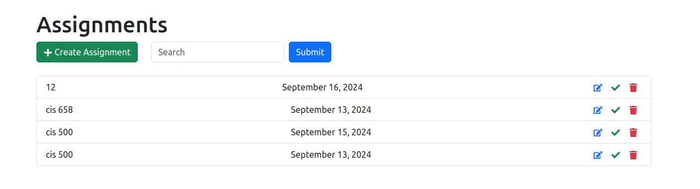
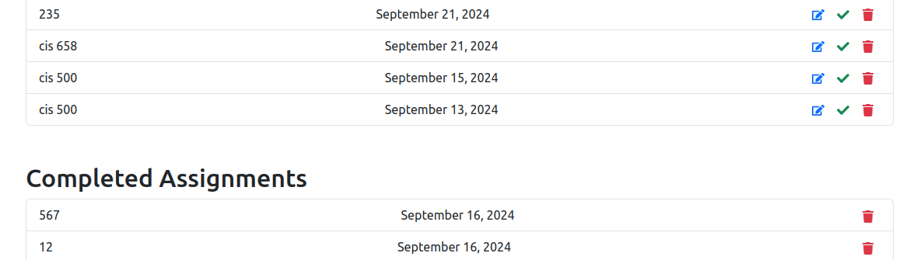
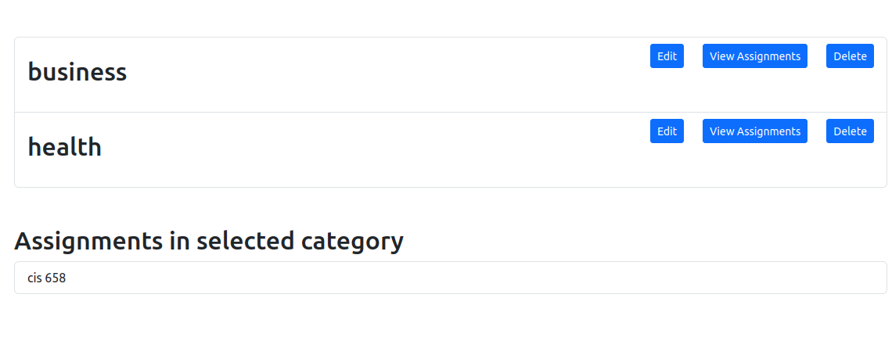

The web app allows users to create, view, update, and delete assignments.
The progress tracking feature allows users to monitor the status of their assignments and tasks. It provides a visual indicator (e.g., completed list) showing how much work is done. Users can update list as they progress, helping them stay organized and on top of their workload.
The category labeling feature allows users to assign labels or categories to their assignments and tasks, making it easier to organize and filter them.
I fell ill while in graduate school and was hospitalized for a few days. The recovery took a few more days, so I was unable to attend classes or submit assignments. I was advised to use task management to organize my assignments and prioritize them based on deadlines. This project was developed as a way to make prioritizing assignments easier. I also wanted to learn about the technologies involved, and this project is being submitted as part of the ALX Software Engineering Program's Portfolio Project.